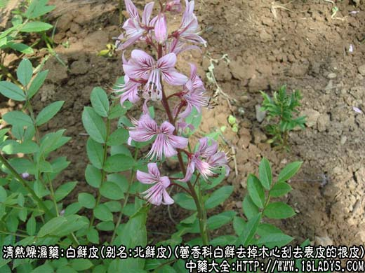
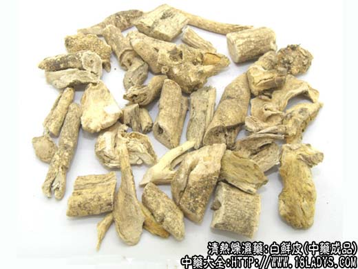
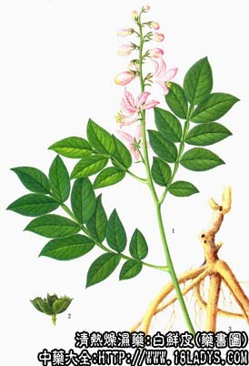

白鲜皮为常用中药。《神农本草经》列为中品。
别名：北鲜皮，八股牛（东北产地）。
来源：为芸香科多年生草本植物白鲜去掉木心刮去表皮的干燥根皮。野生。
产地：主产于辽宁、河北、山东等地；黑龙江、吉林、山西、河南、安徽、陕西、甘肃、内蒙古、湖北等省亦产。
性状鉴别：根皮呈卷筒或双卷筒状，长5～15厘米，直径约1～2厘米，厚约2～5毫米。未去表皮的表面呈灰白色，并有多数细小的凸点及少数须根痕。去掉表皮的呈淡黄白色或类白色。内表面较平滑类白色，附有多数微小闪亮的结晶体，质略轻松，易折断。断面类白色，显层纹。气香，有羊膻气，味微苦。
以根筒粗状，均匀无粗皮及木质骨心者为佳。
主要成分：含白鲜硷、白鲜脑内酯、固甾醇、粗皂甙等。
功效与作用：祛风胜湿、清热解毒。现已证实其作用主要为：1、解热，多用于皮肤病有关的发热；2、抗真菌，对多种表皮癣菌有抑制作用。
炮制：切片，生用。
性味：苦寒。
归经：入脾、胃、膀胱、小肠经。
功能：清热燥湿、祛风解毒，杀虫。
主治：湿热疮毒，风疹疥癣，黄疸，湿热痹痛。
临床应用：主要治疗由“风热湿毒”所致的皮肤病，如湿疹荨麻疹等。
1、治慢性湿疹、荨麻疹，配防风、白蒺藜、乌梢蛇等加强祛风作用，方如双白祛风汤。右可用白鲜皮配地肤子、蛇床子等煎水洗患处。
2、治风湿痹痛，两足屈伸不利，行走不便（风湿性关节炎等），配银花藤、威灵仙等水煎服。
用量：内服3～9g，外用适量。
处方举例：双白祛风汤：白鲜皮9g、白蒺藜12g、乌梢蛇9g、生地12g、防风9g、当归9g、甘草6g，水煎服。
注：据《中药鉴别手册》第一册白鲜皮项下记述，除芸香科白鲜皮为大部分地区习用外，另有少数地区如湖北（西部）、四川、贵州、云南（大理）以及新疆部分地区 以豆科植物锦鸡儿以及白皮锦鸡儿根皮作白鲜皮使用。此外河南省以萝藦科植物鹅绒藤的根皮作白鲜皮使用，此两咱京津不销。